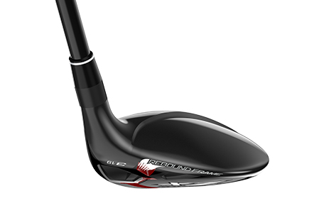

ZX HYBRID
The all-new Srixon ZX Hybrids are true player’s hybrids. Featuring a smaller head shape and square toe to inspire confidence at address, the ZX Hybrids deliver powerful performance in a compact profile. Designed to be a powerful long iron alternative, this hybrid club allows you to focus your energy and deliver maximum power to the golf ball, providing more speed, plus unparalleled distance off the tee.
TECHNOLOGY
Rebound Frame
The rebound frame provides a more efficient transfer of energy, by focusing more energy into the golf ball. Rebound frame's unique structure increases ball speed and distance on every shot, especially centre-face impacts. This works by layering alternating zones of flexible and stiff material, maximising the transfer of energy from the golf club to the ball.
Tour-Preferred Shape
The lightweight carbon crown repositions mass low, pushing MOI up and ZX Hybrids have a smaller footprint, straight face angle and squared-off toe. It's a hybrid designed to suit a skilled player's eye, inspiring confidence as you address your most challenging shots.
Crown Shape
A stepped crown lowers the centre of gravity, optimising launch and increasing MOI. The effect is more forgiveness and consistency, making it easier to keep your ball in play even on a tight fairway, shot to shot.s
ZX Hybrid Specs
SRIXON ZX Hybrid PRICE
259 € / 289 CHF / 2 699 SEK / 229 £